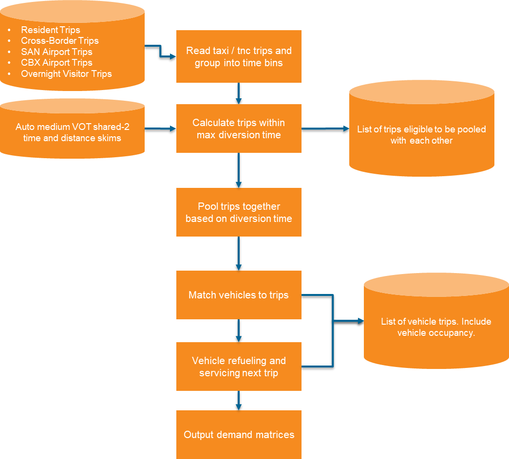

Taxi and TNC Routing Model ¶
The Taxi and Transportation Network Company (TNC) routing model simulates the operation of for-hire vehicle fleets serving passenger trips. This model processes TNC and taxi trips generated by the activity-based demand models and creates realistic vehicle routing patterns including pooled rides, empty repositioning, and refueling trips.
Model Overview ¶
The model operates as a microsimulation of a taxi/TNC fleet, processing trips in chronological order through fine-grained time bins. Key features include:
- Trip pooling: Matches compatible shared-ride requests to reduce vehicle miles traveled
- Vehicle dispatching: Assigns vehicles to trips based on proximity and availability
- Fleet management: Tracks vehicle locations, mileage, and refueling needs
- Deadhead routing: Simulates empty vehicle repositioning between trips
The model design is shown below:

Model Components ¶
Trip Pooling ¶
For shared TNC modes, the model identifies opportunities to combine multiple passenger trips into a single vehicle route:
- Proximity filtering: Finds trip pairs where both origins and destinations are within a configurable buffer (default: 10 minutes)
-
Detour calculation: Evaluates four possible routing scenarios for each pair:
- Origin i → Origin j → Destination i → Destination j
- Origin j → Origin i → Destination j → Destination i
- Origin i → Origin j → Destination j → Destination i
- Origin j → Origin i → Destination i → Destination j
-
Detour validation: Filters out pairs where either passenger’s detour exceeds the maximum allowed (default: 15 minutes)
- Mutual best selection: Uses a recursive algorithm to select trip pairs where both trips prefer each other
Vehicle Dispatching ¶
The model maintains a fleet of vehicles and matches them to trips:
- Free vehicles: Vehicles that have completed their previous trip are matched to new trips based on proximity
- New vehicles: When no free vehicle is available within the maximum wait time, a new vehicle is created at the trip origin
- Wait time tracking: Records the time passengers wait for vehicle arrival
Occupancy Tracking ¶
Vehicle occupancy is tracked for each trip leg:
| Occupancy | Description |
|---|---|
| 0 | Empty/deadhead trip (repositioning or refueling) |
| 1 | Single passenger (or driver in non-AV scenario) |
| 2 | Two passengers |
| 3+ | Three or more passengers |
Refueling ¶
The model tracks cumulative vehicle mileage and routes vehicles to refueling stations when needed:
- Vehicles exceeding the maximum distance threshold are routed to the nearest zone with refueling stations
- Refueling trips are marked as deadhead trips with occupancy 0
- After refueling, the vehicle’s odometer is reset
Configuration ¶
Key settings in taxi_tnc_routing_settings.yaml:
| Setting | Description | Default |
|---|---|---|
time_bin_size |
Simulation time bin size (minutes) | 10 |
pooling_buffer |
Max O-O and D-D time for pooling (minutes) | 10 |
max_detour |
Maximum detour time for pooled trips (minutes) | 15 |
max_wait_time |
Maximum wait before creating new vehicle (minutes) | 15 |
max_refuel_dist |
Maximum distance before refueling (miles) | 300 |
shared_tnc_modes |
Modes eligible for pooling | TNC_SHARED |
single_tnc_modes |
Solo ride modes | TNC_SINGLE, TAXI |
Outputs ¶
The model produces several output files:
TNC Vehicle Trips (output_tnc_vehicle_trips.csv) ¶
Each row represents a vehicle trip leg with columns:
- vehicle_id: Unique vehicle identifier
- origin_taz, destination_taz: Trip endpoints (TAZ level)
- depart_bin: Departure time bin
- occupancy: Number of passengers
- trip_type: pickup, dropoff, refuel, etc.
- is_deadhead: Whether the trip is empty
Pooled Trips (output_tnc_pooled_trips.csv) ¶
Details of matched trip pairs including: - Trip IDs for both passengers - Route scenario used - Detour times for each passenger - Stop sequence
This file is useful for analyzing pooling efficiency and general debugging of the pooling algorithm.
Integration with Traffic Assignment ¶
TNC vehicle trips are aggregated into origin-destination matrices:
- TNCVehicleTrips_pp.omx: One file per period with occupancy-based cores
TNC_EA_0,TNC_EA_1,TNC_EA_2,TNC_EA_3(and similar for AM, MD, PM, EV)
The matrix builder script (tnc_av_matrix_builder.py) reads the vehicle trip outputs and creates OMX matrices that are imported into traffic assignment alongside other demand matrices.
Relationship to Other Models ¶
Upstream Dependencies ¶
- Resident Model: Generates TNC_SINGLE, TNC_SHARED, and TAXI trips
- Visitor Model: Generates visitor TNC/taxi trips
- Cross-border Model: Generates cross-border TNC/taxi trips
- Airport Model: Generates airport ground access TNC/taxi trips
Downstream Integration ¶
The vehicle trip outputs can be used for:
- Traffic Assignment: TNC vehicle matrices are assigned to the highway network
- Fleet sizing analysis
- VMT and emissions calculations
- Equity analysis of service availability